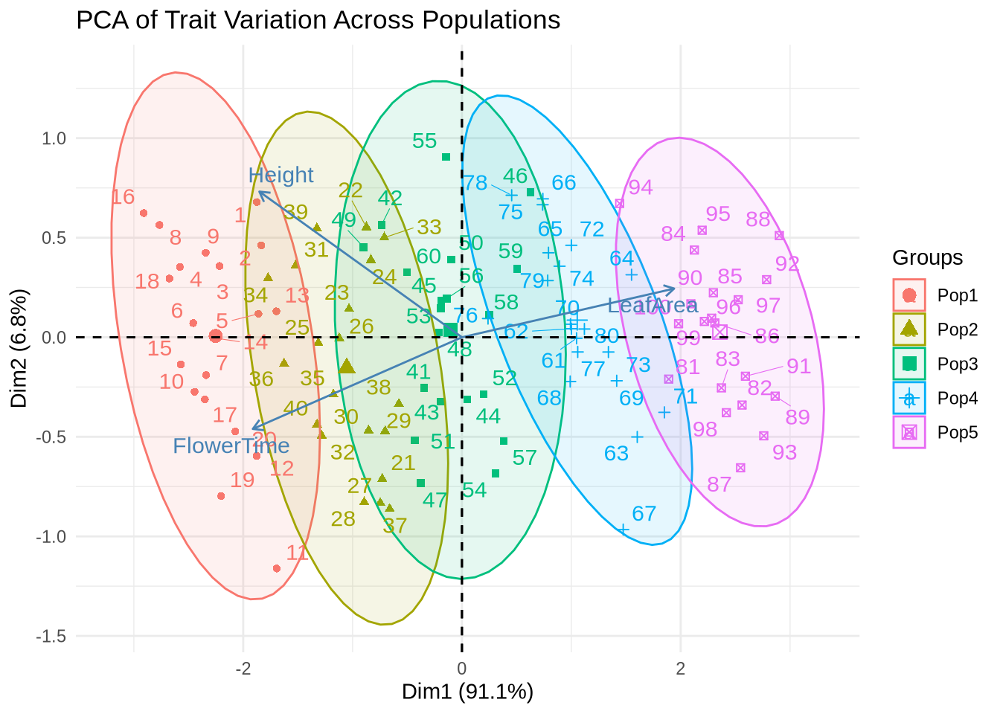
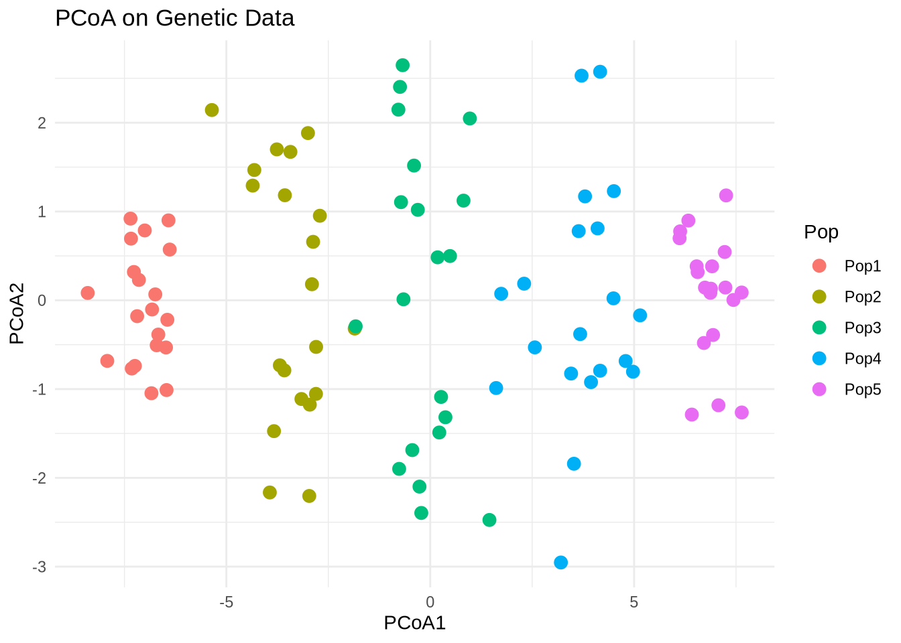
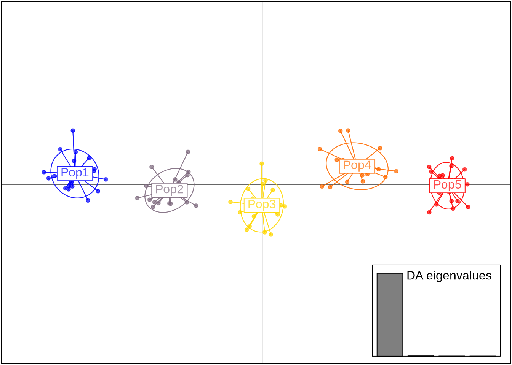
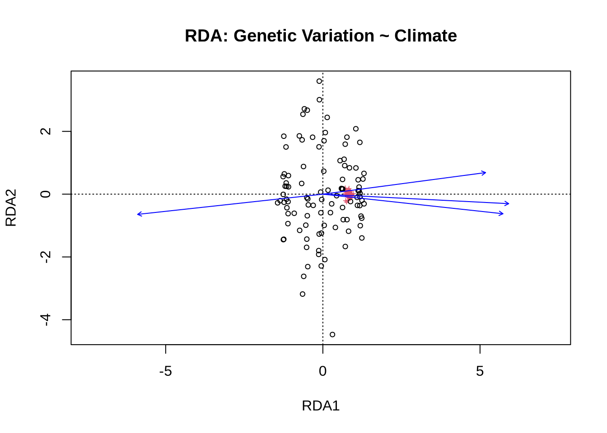
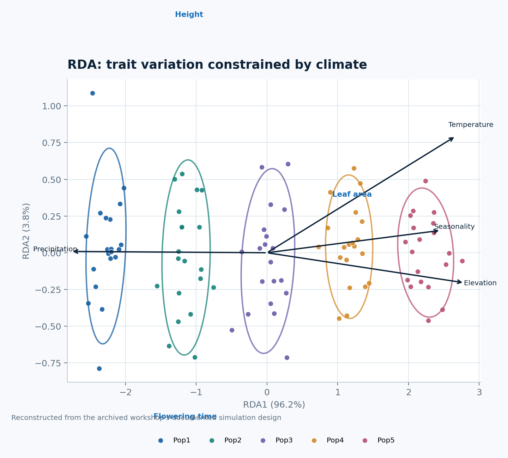

Code
# Core multivariate analysis packages
library(tidyverse)
library(vegan)
library(adegenet)
library(FactoMineR)
library(factoextra)
library(reshape2)Multivariate analysis helps ecologists and evolutionary genomics, helping us uncover structure, reduce dimensionality, and connect biological variation (e.g., genotypes, traits) with environmental gradients.
In this workshop, you will:
- Perform PCA and PCoA to visualize structure among individuals or populations.
- Use DAPC to discriminate among genetic groups.
- Apply RDA (Redundancy Analysis) to link genetic or trait variation to climate variables.
- Interpret results and explore key loadings and constrained axes.
# Core multivariate analysis packages
library(tidyverse)
library(vegan)
library(adegenet)
library(FactoMineR)
library(factoextra)
library(reshape2)We simulate a dataset that mimics a natural population sampled across environmental gradients.
Five populations distributed across latitudinal and climatic gradients
Four environmental variables (Temp, Prec, Elev, Seasonality)
Three functional traits influenced by both population and environment
50 SNPs showing population-level genetic differentiation
set.seed(123)
# Population labels
pop <- rep(paste0("Pop", 1:5), each = 20)
# Coordinates (latitude, longitude)
coords <- data.frame(
Lat = rep(seq(45, 49, length.out = 5), each = 20) + rnorm(100, 0, 0.1),
Lon = rep(seq(8, 14, length.out = 5), each = 20) + rnorm(100, 0, 0.1)
)
# Climate gradients (Temp, Prec, Elev, Season)
clim <- data.frame(
Temp = 8 + 0.9 * coords$Lat + rnorm(100, 0, 0.4),
Prec = 800 - 50 * coords$Lat + rnorm(100, 0, 10),
Elev = 100 * (coords$Lat - 44) + rnorm(100, 0, 20),
Season = 5 + 0.4 * coords$Lon + rnorm(100, 0, 0.5)
)
# Population-level effects on traits
pop_effects <- data.frame(
Pop = paste0("Pop", 1:5),
LeafShift = seq(-2, 2, length.out = 5),
FlowerShift = seq(3, -3, length.out = 5)
)
# Trait data influenced by both population and climate
traits <- data.frame(
LeafArea = 20 +
0.6 * clim$Temp - 0.01 * clim$Prec +
pop_effects$LeafShift[match(pop, pop_effects$Pop)] +
rnorm(100, 0, 0.6),
FlowerTime = 100 -
2.0 * clim$Temp + 0.04 * clim$Season +
pop_effects$FlowerShift[match(pop, pop_effects$Pop)] +
rnorm(100, 0, 1.5),
Height = 30 +
0.5 * clim$Temp - 0.03 * clim$Elev +
pop_effects$LeafShift[match(pop, pop_effects$Pop)] +
rnorm(100, 0, 1)
)
# Genotype data with population differentiation
geno <- as.data.frame(matrix(nrow = 100, ncol = 50))
for (i in 1:5) {
p <- seq(0.1, 0.9, length.out = 5)[i]
geno[((i-1)*20+1):(i*20), ] <- matrix(rbinom(20*50, 2, prob = p), nrow = 20)
}
colnames(geno) <- paste0("SNP", 1:50)
# Combine metadata
dat <- data.frame(ID = 1:100, Pop = pop, coords, clim, traits)
head(dat) ID Pop Lat Lon Temp Prec Elev Season LeafArea
1 1 Pop1 44.94395 7.928959 49.32908 -1454.350 92.92412 7.870637 62.78536
2 2 Pop1 44.97698 8.025688 49.00425 -1456.376 74.32520 7.713426 61.94990
3 3 Pop1 45.15587 7.975331 48.53423 -1467.179 102.89212 8.703525 61.77233
4 4 Pop1 45.00705 7.965246 48.72362 -1460.878 100.12825 8.561629 60.93331
5 5 Pop1 45.01293 7.904838 48.34590 -1455.018 114.70680 7.407352 62.03195
6 6 Pop1 45.17151 7.995497 48.46386 -1455.264 84.13972 8.150625 61.50451
FlowerTime Height
1 3.564334 50.23310
2 2.989375 49.61436
3 5.240048 50.03555
4 6.073493 50.51090
5 4.557430 49.00802
6 7.283285 49.85184PCA (Principal Component Analysis) identifies axes that capture the largest variance among continuous, normally distributed quantitative traits,
such as morphological traits or environmental variables.
PCA reduces correlated traits into a few orthogonal axes that explain the most variance.
trait_pca <- prcomp(dat[, c("LeafArea", "FlowerTime", "Height")], scale. = TRUE)
fviz_pca_biplot(
trait_pca,
habillage = dat$Pop,
addEllipses = TRUE,
repel = TRUE,
title = "PCA of Trait Variation Across Populations"
) +
theme_minimal()
Interpretation:
PCA works best for continuous, normally distributed traits.
The first axis often reflects temperature or size-related variation, while the second may capture timing (phenology) or secondary trait effects.
Populations may now see some clustering or structure.
Additional thinking:
Which traits drive the first PCA axis?
Are populations separated along climatic gradients (e.g., warmer vs. cooler sites)?
When to use PCA:
Use PCA for quantitative, continuous data with potential collinearity (e.g., multiple traits or climate variables).
PCoA (Principal Coordinates Analysis) is used when data are distance-based or non-continuous,
such as genetic data (allele frequencies, SNPs, or F_ST matrices).
Here we compute Euclidean distances on scaled genotypes and visualize population structure.
# Euclidean distance on scaled genotypes
gen_dist <- dist(scale(geno))
pcoa_res <- cmdscale(gen_dist, k = 2, eig = TRUE)
pcoa_df <- as.data.frame(pcoa_res$points)
colnames(pcoa_df) <- c("PCoA1", "PCoA2")
pcoa_df$Pop <- dat$Pop
ggplot(pcoa_df, aes(PCoA1, PCoA2, color = Pop)) +
geom_point(size = 3) +
theme_minimal() +
labs(title = "PCoA on Genetic Data")
Interpretation:
Populations should now cluster according to their allele frequency differences.
When to use PCoA:
Use PCoA when data are non-continous or distance-based (e.g., SNP genotypes, Bray–Curtis dissimilarities, phylogenetic) rather than raw quantitative measurements.
It does not assume normality or linear relationships, unlike PCA.
DAPC (Discriminant Analysis of Principal Components) explicitly maximizes between-group variation (such as predfined groups - populations) while minimizing within-group variation.
It’s ideal for population genetic structure, where you want clear group assignment.
It’s robust for clustering individuals into populations and is commonly used in population genetics.
dapc_res <- dapc(geno, dat$Pop, n.pca = 20, n.da = 4)
scatter(dapc_res, scree.da = TRUE, bg = "white", pch = 20)
Interpretation:
How distinct are populations?
Which PCs contribute most to discrimination?
When to use DAPC:
DAPC is supervised (you tell it group labels).
It reduces noise using PCA first, then applies discriminant analysis (DA).
Best for discrete population assignment, not for discovering gradients.
Ideal when group membership (e.g., populations) is known or hypothesized and you want to find axes that best discriminate among them.
RDA (Redundancy Analysis) is a constrained ordination that directly relates response variables (e.g., SNPs, traits) to explanatory variables (e.g., climate).
It’s a linear model version of PCA where predictors constrain the ordination axes.
Let’s see if climate predicts genetic structure.
rda_res <- rda(scale(geno) ~ Temp + Prec + Elev + Season, data = dat)
summary(rda_res)
Call:
rda(formula = scale(geno) ~ Temp + Prec + Elev + Season, data = dat)
Partitioning of variance:
Inertia Proportion
Total 50.00 1.0000
Constrained 24.98 0.4996
Unconstrained 25.02 0.5004
Eigenvalues, and their contribution to the variance
Importance of components:
RDA1 RDA2 RDA3 RDA4 PC1 PC2
Eigenvalue 24.1902 0.353892 0.273640 0.163182 1.43970 1.36617
Proportion Explained 0.4838 0.007078 0.005473 0.003264 0.02879 0.02732
Cumulative Proportion 0.4838 0.490882 0.496355 0.499618 0.52841 0.55574
PC3 PC4 PC5 PC6 PC7 PC8 PC9
Eigenvalue 1.32264 1.29197 1.16598 1.08045 1.02384 0.96713 0.90273
Proportion Explained 0.02645 0.02584 0.02332 0.02161 0.02048 0.01934 0.01805
Cumulative Proportion 0.58219 0.60803 0.63135 0.65296 0.67343 0.69278 0.71083
PC10 PC11 PC12 PC13 PC14 PC15 PC16
Eigenvalue 0.8752 0.80890 0.78919 0.77270 0.70259 0.68472 0.67310
Proportion Explained 0.0175 0.01618 0.01578 0.01545 0.01405 0.01369 0.01346
Cumulative Proportion 0.7283 0.74451 0.76030 0.77575 0.78980 0.80350 0.81696
PC17 PC18 PC19 PC20 PC21 PC22 PC23
Eigenvalue 0.59371 0.58568 0.55313 0.54661 0.52614 0.477618 0.461842
Proportion Explained 0.01187 0.01171 0.01106 0.01093 0.01052 0.009552 0.009237
Cumulative Proportion 0.82883 0.84055 0.85161 0.86254 0.87306 0.882616 0.891853
PC24 PC25 PC26 PC27 PC28 PC29
Eigenvalue 0.449154 0.402901 0.389152 0.368931 0.350728 0.315360
Proportion Explained 0.008983 0.008058 0.007783 0.007379 0.007015 0.006307
Cumulative Proportion 0.900836 0.908894 0.916677 0.924055 0.931070 0.937377
PC30 PC31 PC32 PC33 PC34 PC35
Eigenvalue 0.285034 0.272317 0.249898 0.243261 0.235318 0.207397
Proportion Explained 0.005701 0.005446 0.004998 0.004865 0.004706 0.004148
Cumulative Proportion 0.943078 0.948524 0.953522 0.958387 0.963094 0.967242
PC36 PC37 PC38 PC39 PC40 PC41
Eigenvalue 0.19051 0.184759 0.168346 0.156458 0.14149 0.125222
Proportion Explained 0.00381 0.003695 0.003367 0.003129 0.00283 0.002504
Cumulative Proportion 0.97105 0.974747 0.978114 0.981243 0.98407 0.986577
PC42 PC43 PC44 PC45 PC46 PC47
Eigenvalue 0.119716 0.107752 0.094117 0.087432 0.076919 0.057455
Proportion Explained 0.002394 0.002155 0.001882 0.001749 0.001538 0.001149
Cumulative Proportion 0.988972 0.991127 0.993009 0.994758 0.996296 0.997445
PC48 PC49 PC50
Eigenvalue 0.05049 0.0429336 0.0343095
Proportion Explained 0.00101 0.0008587 0.0006862
Cumulative Proportion 0.99846 0.9993138 1.0000000
Accumulated constrained eigenvalues
Importance of components:
RDA1 RDA2 RDA3 RDA4
Eigenvalue 24.1902 0.35389 0.27364 0.163182
Proportion Explained 0.9683 0.01417 0.01095 0.006532
Cumulative Proportion 0.9683 0.98251 0.99347 1.000000plot(rda_res, scaling = 2, main = "RDA: Genetic Variation ~ Climate")
anova(rda_res)Permutation test for rda under reduced model
Permutation: free
Number of permutations: 999
Model: rda(formula = scale(geno) ~ Temp + Prec + Elev + Season, data = dat)
Df Variance F Pr(>F)
Model 4 24.981 23.714 0.001 ***
Residual 95 25.019
---
Signif. codes: 0 '***' 0.001 '**' 0.01 '*' 0.05 '.' 0.1 ' ' 1Interpretation:
Which climatic variable has stronger association?
How much of the genetic variance is “explained” vs residual?
When to use RDA:
Use RDA when exploring how much of the variation is explained by environmental predictors.
Significant F-statistics (from
anova) indicate meaningful genotype–environment association.Use RDA to test associations between multivariate response data (genotypes, traits) and environmental predictors. Especially valuable in landscape genomics.
Now, let’s see how traits (instead of SNPs) relate to environmental variables.
rda_trait <- rda(traits ~ Temp + Prec + Elev + Season, data = dat)
anova(rda_trait)Permutation test for rda under reduced model
Permutation: free
Number of permutations: 999
Model: rda(formula = traits ~ Temp + Prec + Elev + Season, data = dat)
Df Variance F Pr(>F)
Model 4 38.447 245.21 0.001 ***
Residual 95 3.724
---
Signif. codes: 0 '***' 0.001 '**' 0.01 '*' 0.05 '.' 0.1 ' ' 1plot(rda_trait, scaling = 2, main = "RDA: Traits ~ Climate")
Interpretation:
Traits aligning with Temp or Elev vectors indicate possible adaptation.
RDA here connects functional traits to the environment.
Additional thinking:
Which traits are most influenced by temperature or precipitation?
Are these relationships statistically significant?
We can test how much trait variation axes (PCA scores) relate to climate gradients.
trait_scores <- as.data.frame(trait_pca$x[, 1:2])
cor(trait_scores, dat[, c("Temp", "Prec", "Elev", "Season")]) Temp Prec Elev Season
PC1 0.9557092 -0.9648432 0.97736718 0.84289173
PC2 0.1757250 -0.1070145 0.02305903 0.05024031Interpretation:
Strong correlations show environmentally structured trait variation.
For example, PCA1 may track temperature-driven size variation.
| Method | Input Data Type | Goal | Example Use |
|---|---|---|---|
| PCA | Continuous quantitative | Reduce dimensionality, visualize trait/climate structure | Leaf traits, soil nutrients |
| PCoA | Distance or dissimilarity | Visualize relationships in distance space | SNP distances, ecological dissimilarity |
| DAPC | Genetic marker data (categorical) | Identify discriminant axes among groups | Population genetic structure |
| RDA | Multivariate response + predictors | Test environmental associations | Landscape genomics, trait–climate links |
Replace simulated climate data with real data (e.g., WorldClim or CHELSA).
Add more traits (height, seed mass, SLA) and rerun PCA.
Compare PCA, PCoA, and DAPC results — do they tell the same story?
Try partial RDA: rda(geno ~ Temp + Prec + Condition(Pop))
Visualize variance partitioning with varpart() from vegan.
Jombart T. adegenet: multivariate analysis of genetic markers. Bioinformatics (2008)
Legendre & Legendre (2012). Numerical Ecology. Elsevier.
Forester et al. (2018). RDA and GEA in landscape genomics. Methods in Ecology and Evolution.
Oksanen et al. vegan package documentation.